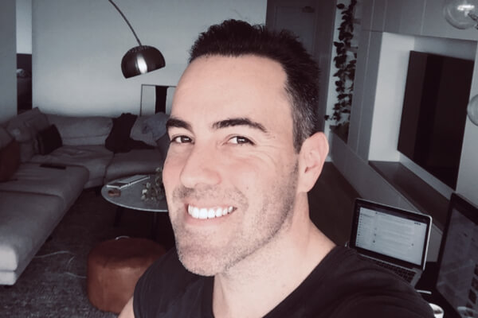
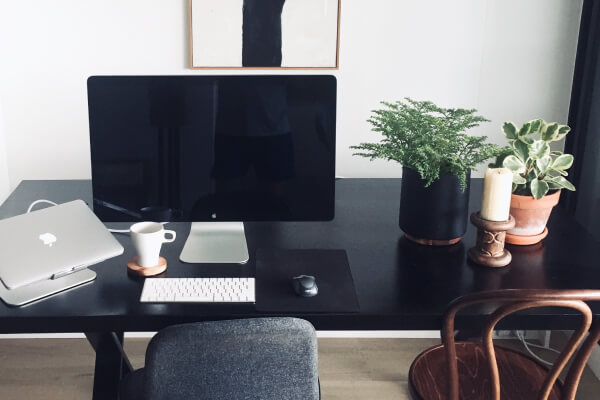
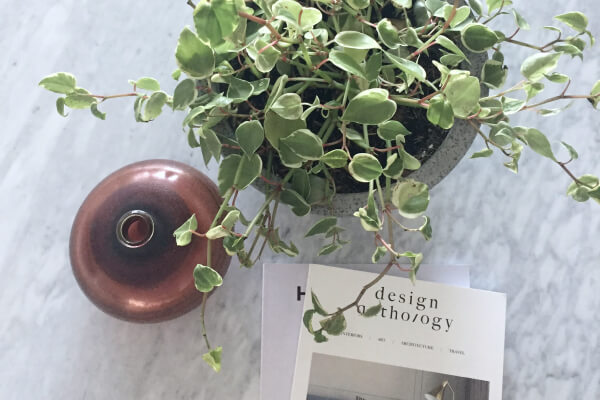
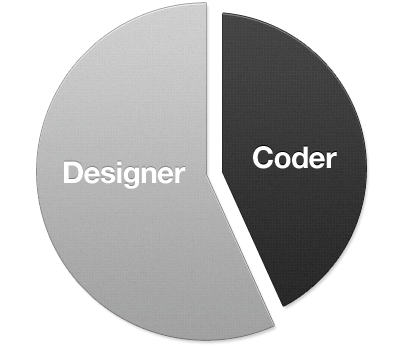
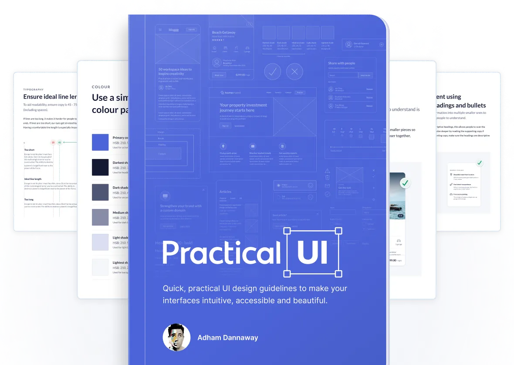

about
I'm a product designer based in sunny Sydney, Australia.
Since 2005, I've enjoyed turning complex problems into simple, beautiful and intuitive designs. When I'm not pushing pixels, you'll find me cooking, gardening or working out in the park.






Part designer
Part designer
Designer UX
Designer System
Interaction design
""Making it pop"s"

Part coder
Desarrollo front-end
HTML/CSS
JavaScript(más o menos)
Swearing at my computer
Eating pizza

Random facts
Soy un poco adicto a las redes sociales
I'm slightly addicted to social media
Gardening is my zen time
I want to live on Pandora
I'm a bit of a clean freak
love to cook (and eat)
DI'm into interior design
enjoy creating things
oda is my mentor
I drink a lot of tea
Mis habilidades
95%
Beber té
90%
Sistemas de diseño
95%
Figma
75%
Jardinería
40%
Calistenia
My skill
Featured here & there
I've been lucky enough to have my work featured in books, magazines and websites around the world. I've also spoken at various design events and enjoy sharing my love of design on social media.
View feature Work

My book
Over nearly 2 decades working as a product designer, I’ve found that you really only need a small handful of UI design guidelines to solve most interface design problems. Learn these quick, practical and powerful guidelines.
Read the bookMy system design
I've studied hundreds of design systems over the years, even before they were called design systems. I wanted to share what I’ve learned by creating a lean and powerful Figma design system that's intuitive, accessible, and beautiful.
View the design system

My story
Learn a little bit more about me, how I got into design, and how I built my career as a product designer. I’ve included key things I've learned, book recommendations, and even some sneak peeks of the first websites I created..
Read my story